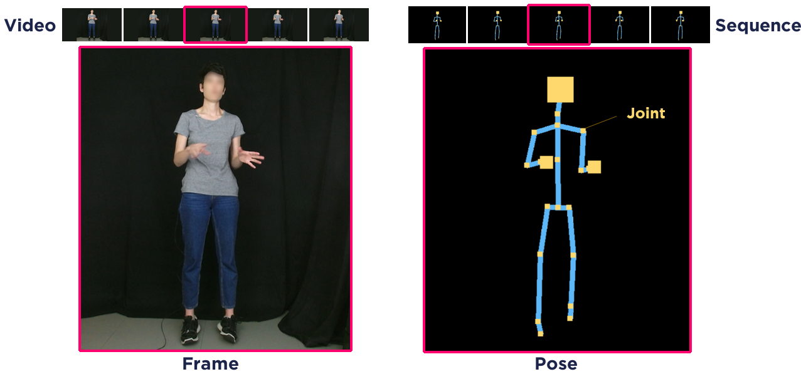

Vocabulary of the Krajjat toolbox
General definitions
In Krajjat, there is a specific vocabulary used throughout the documentation. Most particularly, to differentiate between the video recording and the motion tracking, specific terms are defined in mirror to each other:
A Video is made of individual Frames, while a Sequence is made of individual Poses.
A Recording can consist in a Video, a Sequence, or both.
A Video contains the 2D and RGB capture of the scene of the recording, while a Sequence contains the 3D position of the individual Joints of a Skeleton.
Frames and Poses are indexed chronologically, and each has a Timestamp.
Two types of Timestamps co-exist:
The original timestamp is the timestamp as it was defined during the recording. Kinect uses timestamps based on the time elapsed since January 1, 0000, while Qualisys uses timestamps relative to the beginning of the recording.
The relative timestamp is the timestamp relative to the beginning of the recording. It is always defined in seconds (not milliseconds), and the relative timestamp of the first Pose of a Sequence will always be 0.
The Framerate can refer to the number of Frames per second in a Video, or the number of Poses per second in a Sequence. These two can be different for a same recording.
Processing functions
The Krajjat toolbox allows to perform six different types of correction processing on sequences:
De-jittering (
classes.sequence.Sequence.correct_jitter()) consists in removing the sudden jumps and twitches due to poor recognition of the joint positions during real-time motion tracking. You can find more information on the Jitter correction.Re-referencing (
classes.sequence.Sequence.re_reference()) allows to define a specific joint to become the new origin point of the 3D space, with all of the other joint coordinates being defined depending on the position of the reference joint.Trimming (
classes.sequence.Sequence.trim()) involves removing poses at the beginning and/or at the end of the sequence. This method can be used in conjunction with an audio file, to trim the sequence to the onset and the offset of the speech.Resampling (
classes.sequence.Sequence.resample()) consists in modifying the framerate of a sequence. This can be used to turn a sequence with a variable framerate into a sequence with a stable framerate, or to upsample or downsample a sequence. Various methods of interpolation are available to complete the missing data.Zeros correction (
classes.sequence.Sequence.correct_zeros()) allows to interpolate the missing data when the coordinates of a joint are set at the origin. Notably, when the Qualisys system cannot track a specific joint for a few frames, it sets the joint coordinates at the origin. Performing a zeros correction allows to approximate the position of the joint based on the coordinates before and after the missing data.Randomization (
classes.sequence.Sequence.randomize()) generates random starting coordinates during the first pose, according to defined rules, while keeping the movement across all poses. This allows to get a sequence where the gestural information is lost, for experimental purposes.